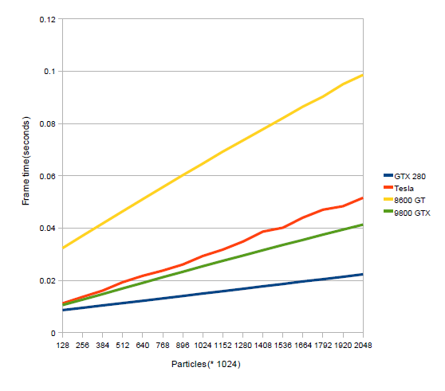
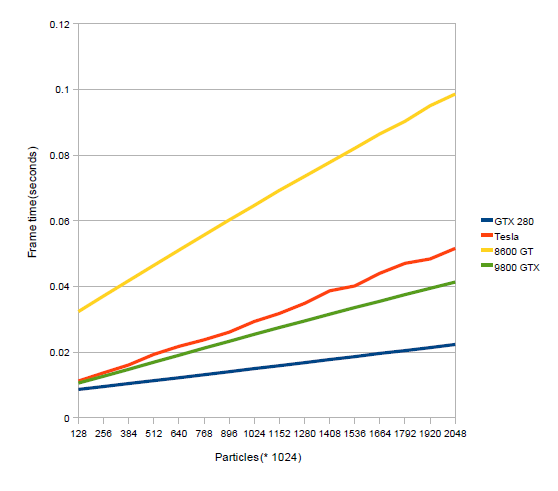
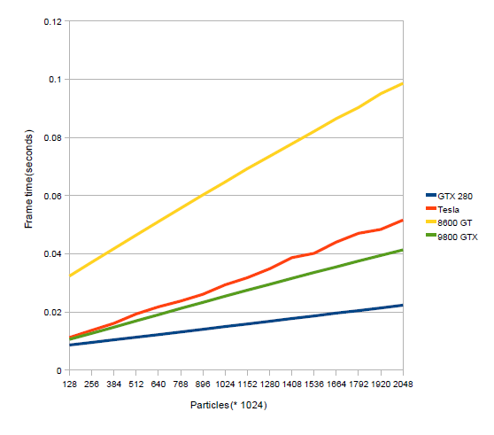

Figures 4.5, 4.6: Left - scaling snow particle count when wind field is inactive; Right - scaling snow particle count when wind field is active with constant dimensions 192x192x16 (589,824 voxels).
Robin Eidissen, Master of Science in Computer Science
February 2009
Norwegian University of Science and Technology
The problem can be divided into a few parts: simulating individual snowflakes in flight, simulating the wind field that affects the snowflakes, and simulating the buildup of snow on solid surfaces upon landing. Previous work has been done that accomplishes this using single-threading and using multithreading on the CPU; this paper focuses on further increasing performance (and thus the maximum possible scope of such a snow simulation) by using multithreading on the GPU.
The wind field is simulated via Computational Fluid Dynamics (CFD), i.e. by discretizing the simulation volume into a 3D grid where each cell holds a wind velocity vector. For each step of the simulation, every cell in the grid is updated according to the Navier-Stokes equations, with each cell affecting its six immediately adjacent neighbors.
2. Simulation of snowflakes
Snowflakes are simulated by means of a particle system, with each snowflake particle having a position and velocity. Individual snowflakes' velocities are then affected by gravity and the wind velocity at any given wind field cell, in addition to a chaotic lift force.
3. Simulation of snow buildup
Solid geometry is represented by a terrain heightmap covering the floor of the simulation volume, rendered as a matrix of triangles with their vertices offset vertically according to a generated black-and-white image. Snow buildup is then simulated by another triangle matrix overlaid on the terrain heightmap as a sort of "carpet", that grows in height depending on where snowflakes come into contact with it.
Figure 2.11: Example height map visualization.
Rendering of the terrain/snow buildup meshes was optimized by directly modifying the relevant vertex buffer objects (VBOs) on the GPU via the compute shaders. Snowflakes were rendered using an OpenGL optimized form of billboards (i.e. textured quads rotated to face the camera at all times) called point sprites, and - as they were stored in the form of a single VBO - similarly updated entirely from the GPU side.
Four systems (consisting effectively of one workstation each) were tested, with the primary differences being their GPU cards; these were: the GTX 280, the Tesla c1060, the 8600 GT, and the 9800 GTX.
Table 4.1: Systems used for testing.
Checking what wind field cell a snow particle is occupying is implemented by storing the wind field as a 3D texture and then using CUDA's hardware texture sampling (apparently an optimization over a regular "trilinear interpolation" lookup). Collision checking of particles with the ground is also fast, as the particle is only colliding if its height is lower than that of the terrain heightmap at its x and y coordinate.
The simulation of the wind velocity field is then arguably the more complex challenge, as the wind field is comprised of four 3D array structures (for velocity vectors, pressure, solution vectors, and obstacles) spanning the simulation volume. All of these must be accessed and updated at each step of the simulation, and additionally have computations which depend on neighboring cells.
Figure 3.8: Debug rendering of the 3D pressure field, where red areas are low pressure and yellow areas are high pressure.
Essentially, the grids are divided into 3D blocks of cells for processing purposes so that they can be threaded off on the GPU for processing of the necessary CFD calculations. However, there are complexities inherent in preventing edge cases (i.e., at the borders of blocks) from affecting the parallelized calculations. As snow buildup is generally on the slower side, updating of the obstacle field is done slower than the other grids, such that a full update occurs only once every 3.5 seconds.
Figure 3.14: "Numeric instability as seen in the pressure field"; block edges appear to be visible here.
Performance of the various tests is summarized in the graphs below. Note that 0.016s = 60FPS, 0.033s = 30FPS, and 0.042s = 24FPS; taking this into account, it appears that the GTX 280 card was the only one to maintain realtime performance throughout all tests.
Figures 4.3, 4.4: Left - scaling the number of cells/voxels in the wind field when no snow particles are present; Right - scaling the wind field when a constant number of snow particles (512k) are active.

Figures 4.5, 4.6: Left - scaling snow particle count when wind field is inactive; Right - scaling snow particle count when wind field is active with constant dimensions 192x192x16 (589,824 voxels).
Figure 4.7: Scaling terrain resolution with a constant particle count (512k) and wind field resolution (256x256x32, or 2,097,152). Note this graph represents FPS on the y-axis (i.e., higher values are better here).

Figure 4.10: Resulting visualization of snow buildup on a blocky shape.